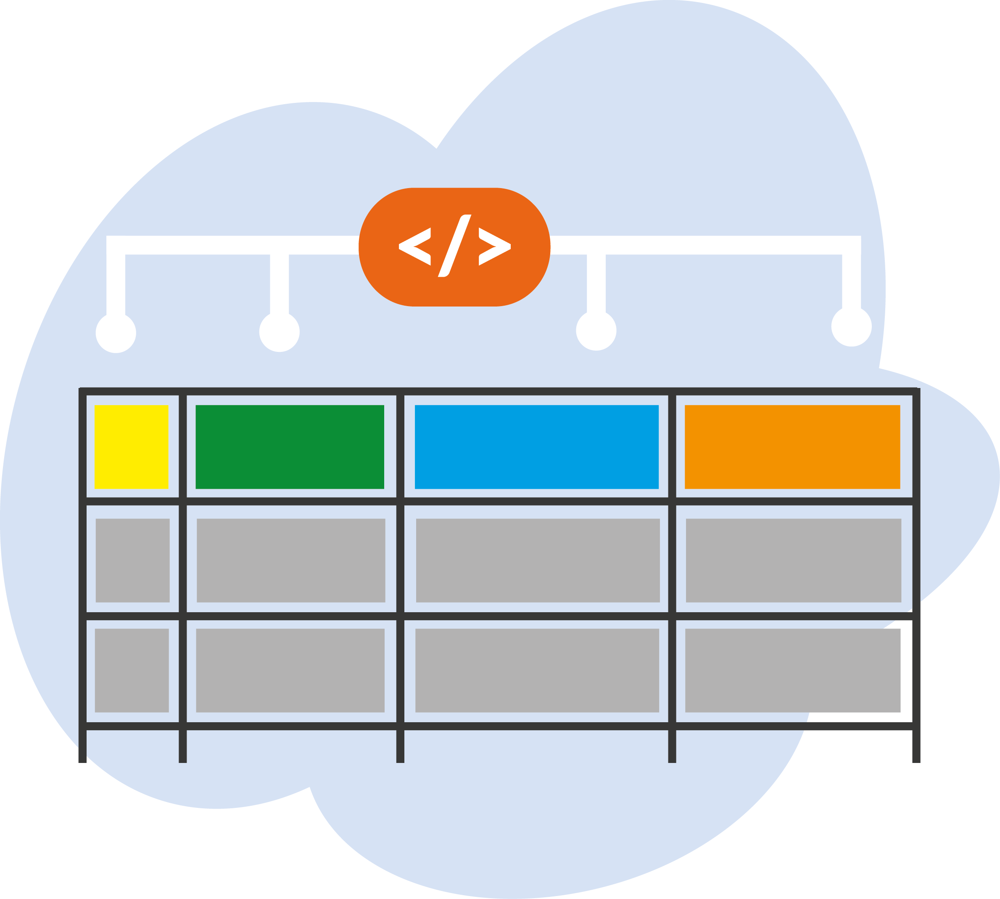
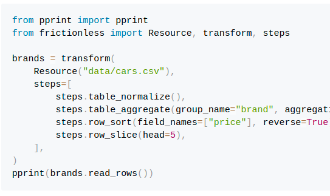
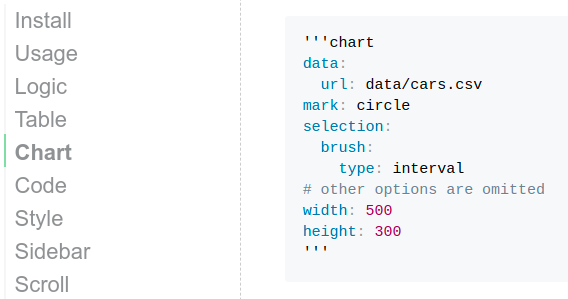
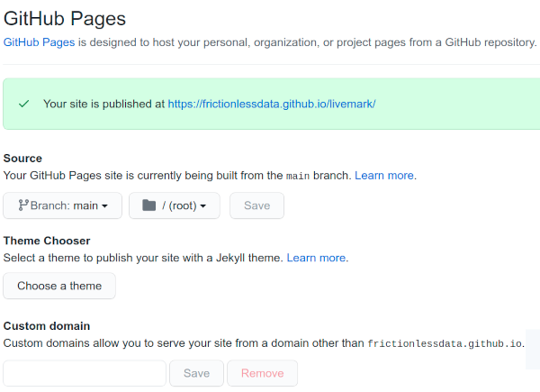

Livemark


This document is completely written and published in Livemark notation
Livemark is a static site generator that extends Markdown with interactive charts, tables, scripts, and more.
Install
Livemark is a Python library and it can be installed with PIP:
$ pip install livemark
After installation, you can use a command-line interface:
# Build a single document
$ livemark build '<path=index.md>'
# Start a livereload server
$ livemark start
When you build/start Livemark it takes your index.md (or a provided file) and generates a corresponding HTML file. It extends markdown as explained in the sections below.
Logic
Livemark preprocesses your document using the Jinja templating language. Inside templates, you can use Frictionless Framework as a frictionless variable to work with tabular data. This is a high-level preprocessing so you can combine Logic with other syntax, such as Table or Chart:
{% for car in frictionless.extract('data/cars.csv', layout={"limitRows": 5}) %}
- {{ car.brand }} {{ car.model }}: ${{ car.price }}
{% endfor %}
- Volkswagen Vento: $785
- Hyundai Verna: $774
- Skoda Rapid: $756
- Suzuki Ciaz: $725
- Renault Scala: $724
Table
https://handsontable.com/docs/9.0.0/tutorial-introduction.html
Livemark supports CSV table rendering using Handsontable, which you can see in the example below (replace the single quotes with back ticks). The data property will be read by Frictionless Framework so in addition to Handsontable options you can pass a file path or a resource descriptor in a Frictionless format:
'''table
data: data/cars.csv
maxRows: 10
filters: true
dropdownMenu: true
columnSorting:
initialConfig:
column: 2
sortOrder: desc
width: 600
'''
Chart
Livemark supports Vega Lite visualisations rendering (to try this example, replace the single quotes with back ticks):
'''chart
data:
url: data/cars.csv
mark: circle
selection:
brush:
type: interval
# other options are omitted
width: 500
height: 300
'''
Script
Livemark supports Python/Bash script execution inside Markdown. We think of this as a lightweight version of Jupiter Notebooks. Sometimes, a declarative Logic/Table/Chart is not enough for presenting data so you might also want to include scripts:
from pprint import pprint
from frictionless import Resource, transform, steps
brands = transform(
Resource("data/cars.csv"),
steps=[
steps.table_normalize(),
steps.table_aggregate(group_name="brand", aggregation={"price": ("price", max)}),
steps.row_sort(field_names=["price"], reverse=True),
steps.row_slice(head=5),
],
)
pprint(brands.read_rows())
[{'brand': 'Volkswagen', 'price': 785},
{'brand': 'Hyundai', 'price': 774},
{'brand': 'Skoda', 'price': 756},
{'brand': 'Suzuki', 'price': 725},
{'brand': 'Renault', 'price': 724}]Markup
https://getbootstrap.com/docs/4.6/getting-started/introduction/
With Livemark you can use HTML inside Markdown with Bootstrap 4 support. Here is an example of creating a responsive grid of cards (note that if we set a markdown class we can use markdown inside html):
<div class="w-50">
<div class="container">
<div class="row">
<div class="col-sm">
<div class="markdown"></div>
<div class="text-center">
<p><strong>Data Package</strong></p>
<p>A simple container format for describing a coherent collection of data in a single package.</p>
</div>
</div>
<!-- other columns are omitted -->
</div>
</div>
</div>

Data Package
A simple container format for describing a coherent collection of data in a single package.

Data Resource
A simple format to describe and package a single data resource such as a individual table or file.

Table Schema
A simple format to declare a schema for tabular data. The schema is designed to be expressible in JSON.
Content
Livemark supports Github Flavoured Markdown so you can use familiar notation:

Sidebar
Livemark provides an automatically generated table of contents:

Scroll
Livemark provides a scroll-to-top button when you scroll down your document:

Layout
https://github.com/frictionlessdata/livemark/blob/main/livemark/assets/templates/layout.html
It's possible to customize the layout. You will need to save it first:
$ livemark layout > layout.html
Then, you can update the layout as a whole or use Jinja's inheritance. For example, let's use Tailwind instead of Bootstrap and some custom styles:
layout.html
{% extends "layout.html" %}.
{% block markup %}
<link rel="stylesheet" href="static/tailwind.css">
<link rel="stylesheet" href="static/custom.css">
{% endblock %}
Then link your new layout in markdown documents:
article.md
---
layout: layout.html
---
# My Article
This article uses a custom layout
Publish
Livemark generates a static HTML document so you can publish it using any static page hosting. A common option for hosting is to use Github Pages - go to "Settings->Pages" in your repository and choose your main branch in the source menu:
